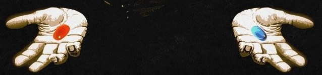

витаминки
Что такое витамины?
Название отсылает нас к vita(жизнь). Их называют жизненно важными незаменимыми органическими соединениями, ускоряющими биохимические реакции. Они участвуют в обмене веществ, синтезе гормонов и фермментов, энергообмене и многом другом. А без них все это нарушается и называется авитаминозом.
Считается что в теле витамины не создаются, либо в недостаточном количестве.
Предпосылка изобретения витаминов основана на идее болезней, вызываемых недостатком чего либо. Надо понимать, что необходимость синтетических витаминов это теория, которая имеет противоречия, а витамины - молекулы, которые никогда не наблюдались непосредственно в еде или природе, хотябы в виду их наноразмера, а только как результат лабораторных манипуляций с различной химией, где их изоляция от других веществ неидеальна. Концепция витаминов полагается на то что отдельными веществами можно имитировать\заменить цельные продукты, по крайней мере так это пытаются продать потребителям. А отдельные изолированные витамины в природе не существуют. Нет доказательств, что фрукт, овощ или гриб имеют крошечную чудо-молекулу, которая делает все хорошее, и что вы можете вытащить ее из пищи в отрыве от всех других микроэлементов и заставить «работать» так же, как она предположительно делает в пище.
Витамины делят на две группы: жирорастворимые (A, D, E, K) и водорастворимые (C и витамины группы B).
Жирорастворимые накапливаются в жировой ткани и печени. Избыток водорастворимых выводится с мочой.
Маркетинг сообщает нам что некое сбалансированное питание дает их достаточно, но современная рафинированная, тепличная еда ими бедна. Они абсолютно необходимы в синтетической форме для больных, беременных, старых, спортсменов и занимающихся тяжелым физическим трудом. Утверждается что особенно они полезны зимой и весной, "укрепляя иммунитет", предотвращая болезни, фактически заменяя фрукты, овощи, движение и солнце. Ну и разумеется они полезны при стрессе, плохой экологии и диетах. Если обычно подразумевается, что витамины дополнительно применяются только в случае доказанных клинических проявлений их дефицита, то маркетинг рекомедует заниматься профилактикой. По сути на данный момент маркетологи пытаются продать их всем, манипулируя статистикой, говоря о дефиците у каждого, хотя большинство никогда даже не сдавало анализы на витамины.
В данном случае интересно рассмотреть именно синтетические витамины(СВ), которые заявляются как идентичные природным, находящимся в пище. Повсеместно утверждается их польза для здоровья и утверждается что СВ - это выделенные изолированные те самые витамины из пищи. Поэтому интересно рассмотреть обратную сторону, риски и вред.
Что такое синтетические витамины?
Есть много маркетинга на тему натуральности СВ, что считать натуральным и природным. На деле все рафинированные витамины выделенные откуда либо различными манипуляциями проще считать синтетическими. Утверждается что химические манипуляции дают на выходе идентичный продукт. Возможно это так, но так же утверждается, что готовка пищи, высушивание и ее хранение существенно снижают количество витаминов в ней. Вкус пищи действительно сильно меняется, странно полагать что более жесткие химические манипуляции дают идентичный продукт на выходе. Рафинированные продукты обладают преимуществами для промышленности, удобны для хранения, для потребителя же наоборот часто ценны цельные скоропортящиеся продукты, так как он может рассматривать продукты с точки зрения долгосрочной пользы для здоровья, а не сугубо для извлечения и максимизации прибыли, в том числе краткосрочной.
Производство
Экстракцией из природного сырья получают иногда витамин Е (различные растительные масла), D (рыбий жир) и каротиноиды (экстракты водорослей, цветков). Небольшую часть, например витамин В12, производят с помощью микробного синтеза. В основном же витамины получают химическим синтезом.
Синтетическое производство витаминных добавок достаточно сложно и опасно, они производятся из продуктов нефтехимии, тяжелых металлов и разных чрезвычайно вредных веществ. По сути их производители могут создавать химическое оружие, в чем некоторые были задействованы ранее. Например используются: метанол, бензол, нефтяные сульфонаты, ацетилен, рафинированные масла, производные каменноугольной смолы, соляная кислота, ацетонитрил, аммиак, ацетон, палладий, сложные эфиры нефти и соляной кислоты, формальдегид, цианид, серная кислота.
Производство витамина С
Чтобы выделить витамин С из лимонного сока, сначала в него добавляют свинец, а затем его тщательно удаляют.
Затем различные реакции с аммиаком, уксусной кислотой и целым рядом растворителей – от бутилового до этилового спирта, от ацетона до петролейного эфира.
После того, как все это было нагрето, высушено, снова нагрето и снова высушено,
это тестируется на животных.
Если они не заболеют цингой, то у вас получилась аскорбиновая кислота,
более известная как витамин С.
Часто используется т.н. процесс Райхштейна:
1. Сначала D-глюкоза, полученная из генетически модифицированной кукурузы,
преобразуется в D-сорбит с использованием никеля в качестве катализатора.
2. Этот D-сорбит преобразуется в L-сорбозу бактерией Acetobacter.
3. Затем L-сорбоза преобразуется в диацетон-L-сорбозу с помощью ацетона и кислоты.
4. Далее перманганат калия преобразует диацетон-L-сорбозу в дипрогуловую кислоту.
5. Дипрогуловая кислота превращается в гулоновую кислоту при нагревании и добавлении воды.
6. В итоге гулоновая кислота превращается в аскорбиновую кислоту в результате реакции, катализируемой платиной.
7. Полученную аскорбиновую кислоту затем смешивают с другими вспомогательными веществами для получения порошка и таблеток витамина С.
D3\холекальциферол получают облучением животного жира с использованием растворителей, таких как гексан, ацетон, этанол и агрессивных катализаторов, таких как палладий. Процесс вначале имитирует природный, где D3 вырабатывается под ультрафиолетовым излучением.
Производство B9
Ингредиенты:
Производные птеридина: наиболее распространенн птерин, получаемый из гуанина и формальдегида;
парааминобензойная кислота(ПАБК); глутаминовая кислота или глутамат;
различные химикаты для ускорения реакций и растворители для очистки:
восстановители - никотинамидаденин, динуклеотидфосфат, водород, боргидрид натрия, литийалюминийгидрид, муравьиная кислота;
растворители - этанол, метанол, диметилсульфоксид, ацетон, вода;
дополнительно - соляная кислота или гидроксид натрия.
Процесс производства:
Реакции конденсации: производные птеридина, ПАБК и глутаминовая кислота объединяются в серии реакций,
образуя фолиевую кислоты.
Для синтеза и очистки используются растворители,
а для контроля pH и облегчения протекания реакций — реагенты (например, соляная кислота или гидроксид натрия).
Очистка кристаллизацией, фильтрацией и/или хроматографией.
Добавление стабилизаторов и добавок: микрокристаллическая целлюлоза, стеарат магния или рисовая мука,
диоксид титана и аскорбиновая кислота.
Производители
Крупнейшие производители т.н. bigpharma: Pfizer, Bayer, Natures Bounty, Amway.
Далеко не все компании работают исключительно под названием холдинга, которому принадлежат.
Основными производителями фолиевой кислоты являются BASF SE, DSM NV, Merck KGaA и Lonza Group, а ведущим производителем является Китай.
Эти корпорации не продают добавки, но поставляют основные ингредиенты («витамины», «минералы» и добавки),
используемые при производству добавок.
Pfizer владеет Wyeth, например бренд Centrum, ведущий мировой производитель поливитаминов.
Nestlé Health Science(Nestlé) владеет Atrium Innovations, чьи бренды включают Garden of Life и Pure Encapsulations.
BASF владеет Cognis.
BASF SE — одна из крупнейших химических компаний в мире,
специализирующаяся на производстве кислот (серной, азотной и соляной),
щелочей (гидроксида натрия и гидроксида калия), диоксида титана, смазочных материалов,
гербицидов (например, глифосата, дикамбы), генетически модифицированных семян,
полиамида и полибутилентерефталата, полиэтилена и полипропилена, этилена и пропилена, красок и лаков,
нефтехимических продуктов (этилена, пропилена, бутилена, бензола, толуола, ксилена, метанола),
смол (полиуретановых, эпоксидных и акриловых), растворителей, витаминов и минералов.
Большинство ингредиентов в ее продукции получены из нефтехимических продуктов.
DSM NV специализируется на пищевых добавках и промышленных материалах, таких как витамины,
пробиотики, различные виды пластика, смолы, используемые в красках, покрытиях и клеях,
термопластичные полиуретаны (TPU), нити для 3D-печати, пантенол и гиалуроновая кислота.
Основными ингредиентами продукции DSM являются химикаты.
Merck KGaA в основном известна фармацевтической продукцией,
биотехнологической продукцией и инструментами/приборами:
химиотерапевтические фармацевтические препараты (также известные как цитотоксические препараты ),
рецептурные препараты, химикаты,
используемые в молекулярной науке и лабораториях
(буферы, реагенты, растворители, среды для культивирования клеток, хроматографические смолы,
материалы для производства полупроводников),
материалы для дисплеев (ЖК-дисплеи и органические светодиоды), материалы на основе графена,
пигменты, промышленные покрытия, чернила, покрытия, наноматериалы, клеи, пищевые добавки,
средства по уходу за кожей и средства личной гигиены.
Большинство продуктов Merck состоят из ингредиентов, полученных из нефтехимии.
Lonza Group специализируется на производстве фармацевтических,
биотехнологических и пищевых продуктов, например, искусственных моноклональных антител,
конъюгатов антитело-лекарство (ADC), вирусных векторов (используемых в вакцинах и генной терапии),
культур стволовых клеток и анализов на основе стволовых клеток, сред для культивирования клеток,
реагентов, биотехнологического оборудования, гиалуроновой кислоты, полимеров,
используемых в покрытиях, клеях, электронике,
полупроводниковых химикатов и специальных покрытий для электронных компонентов и устройств,
ингибиторов коррозии, биоцидов и дезинфицирующих средств,
наборов для редактирования генов CRISPR/Cas9 и ингредиентов для клеточной терапии
(например, инструментов и реагентов, инженерных клеточных линий,
линий клеток яичников человека и китайского хомячка, услуг по производству вирусных векторов,
реагентов для трансфекции, Nucleofector™, инженерных Т-клеток).
Большинство ингредиентов Lonza Group представляют собой химикаты и побочные продукты,
полученные путем смешивания химикатов с микроорганизмами.
Витаминная индустрия движима фармацевтическими и химическими корпорациями. Большинство добавок, которые покупают люди, производятся из отходов промышленности, которые очищаются и упаковываются в большие химические бочки, продаваемые в Индии и Китае. Они также попадают в частные торговые марки «органических», «натуральных» и «цельных пищевых» добавок, и эти термины не имеют существенного значения (если смешать измельченные грибы с кучей синтетических химикатов, можно дать этому привлекательное название и этикетку, и кто то будет верить, что они потребляют природу в бутылке). Ярлычки на конечном продукте "сделано в России\США\где угодно" не означают, что вещества для них производятся в этой же стране.
Примеси и чистота
Неидеальность химических манипуляций при производстве, хранении, транспортировке предпологает некоторое количество примесей в готовом продукте, а также продукты окисления вещества. Обычно говорится о металлах и выделяют тяжелые металлы, но также это различные растворители и продукты нефтехимической промышленности. Так же некоторые "вспомогательные" вещества добавляются специально и их количество может быть больше непосредственно действующего вещества. Ароматизаторы, красители, консерванты и т.д., например стеарат кальция, стеарат магния, рисовая мука, крахмал, сахароза, тальк, микрокристаллическая целлюлоза, диоксид титана, аскорбиновая кислота. Одна из причин разбавления действующего вещества, например каким то сахаром, банально в том что сахар дешевле.
Промышленные вспомогательные вещества
Микрокристаллическая целлюлоза и дикальцийфосфат смешиваются и
используются в качестве наполнителя в синтетических добавках с витамином D3.
Наполнитель увеличивает вес продукта.
По сути, это наполнитель, который опасен, по мнению всех производителей,
но в целом признан безопасным Управлением по санитарному надзору за качеством пищевых продуктов и медикаментов США (FDA).
Дикальцийфосфат
[Хотя производитель химиката заявляет, что он опасен,](https://www.spectrumchemical.com/media/sds/CA160_AGHS.pdf) Управление по санитарному надзору за качеством пищевых продуктов и медикаментов США (FDA) объявило его общепризнанно безопасным (GRAS) при «использовании в соответствии с надлежащей производственной практикой»
[Список побочек.](https://www.finarchemicals.com/msds/di-Calcium%20phosphate%20dihydrate.pdf)
FDA считает его настолько безопасным , что оно считается кальциевой добавкой. Поэтому в США его добавляют в обработанные пищевые продукты, требующие обогащения . Это означает, что его добавляют в хлопья, муку, лапшу и т. д.
Микрокристаллическая целлюлоза
[Согласно паспорту безопасности производителя («MSDS»)](https://www.spectrumchemical.com/media/sds/CE112_AGHS.pdf),
это вещество также считается опасным . Написано, что многократное проглатывание может повлиять на свертываемость крови.
В США компания DuPont производит его под торговой маркой Avicel.
Avicel (DuPont) имела проблемы из-за того, что в их микроцеллюлозе содержалось повышенное количество хлорида аммония.
Стеарат магния
[В паспорте безопасности вещества указано](https://www.fishersci.com/store/msds?partNumber=M5850&productDescription=MAGNESIUM+STEARATE+NF+50KG&vendorId=VN00033897&countryCode=US&language=en),
что это вещество следует использовать только в лабораторных условиях
и не добавлять в пищевые продукты или лекарства.
Кремний
[Кремний может содержать более 1% оксида алюминия](https://fscimage.fishersci.com/msds/95182.htm),
а также следовые количества оксида железа и оксида титана
Обычно доля действующего вещества заявляется около 99%. 1 процент примесей это немного, однако они могут накапливаться организмом при систематическом приеме.
Есть две формы регистрации продукции с витаминами - биологически активные добавки(БАД), лекарственные средства(ЛС). Если препарат регистрируется как БАД, то примеси у него не нормируются как у ЛС, т.к. он должен отвечать требованиям к пищевой продукции. В теории это должно давать разные результаты, некоторые больше доверяют ЛС, на деле есть много соединений, в том числе оформленых как ЛС, не имеющих доказанной эффективности, зато имеющих доказанные побочки.
Отдельной темой для рассмотрения являются микроорганизмы используемые в произдстве, т.к. продуктом их жизнедеятельности является не только целевое вещество.
БАД
БАД это форма регистрации пищевого продукта, клинических испытаний не проходят, оборот не контролируется спецефически. Это оправдывается тем, что например витамины хорошо исследованы, так проще их производить и распространять, не затрачивая существенные средства на новые исследования и не информируя потребителей о побочных\основных эффектах. Их состав и действие может существенно отличаться от заявленных.
Предпологают наличие природных или идентичных веществ, которые рекламируют как лекарственные средства, натуральная альтернатива лекарствам, не имеющая побочек. Однако часть обращений в больницы напрямую связаны с последствиями приема добавок.
В добавки могут входит различные репотентеры, сибутрамин, антидепрессанты, слабительные, стероиды, мочегонные, нестероидные противоспалительные средства(НВПС), антибиотики, парацетомол, свинец, кадмий, мышьяк, стрихнин, варфарин, белки различных животных, наркотики, психотропные вещества. Иначе говоря почти что угодно!
Это огромный мировой рынок, потребители которого сконцентрированы в развитых странах, почти без регулирования, оценки безопасности и с ложной рекламой.
Существенная часть БАД распостраняется через аптечные сети, визуально малоотличима от ЛС, и составляет значительную часть продаж.
Дэвид Кесслер, уполномоченный FDA на слушаниях в конгрессе по поводу закона об охране здоровья и просвещения в сфере использования биологически активных добавок к пище. 1993г. "Вначале осознайте, что индустрия БАД, по сути, не регулируется. Сегодня, когда потребители приобретают добавку, они предполагают, что продукт безопасен. Но дело в том, что систематической оценки безопасности БАД никогда не существовало. И когда потребители читают утверждение о пользе добавки для здоровья, они полагают, что она принесет пользу, которую рекламируют. В действительности рынок переполнен необоснованной рекламой. Перед нами серьезная проблема".
БАДы - не лекарства, которые профилактируют или лечат, а всего лишь добавки к пище. Они легко изготавливаются на производстве, не требуют разработки научных трудов, не так активно проверяются на безопасность, не проверяются на эффективность (т.к. известно, что для здоровых людей ее нет). По существу не несут практической пользы и их продают благодаря активному маркетингу для легкого заработка фарм фирм.
Усвояемость
Если соединения поступающие из пищи содержат необходимую нам форму витаминов, то СВ содержат и другие формы(изомеры\витомеры), которые одинаковы по составу, но отличаются по строению и свойствам. Статья про хиральность\изомеры.
Например выделяют 4 изомера аскорбиновой кислоты(АК), из них только 1 обладает биологической активностью (L-АК) и называется непосредственно витамином, другие имеют как минимум существенно меньшую активность или являются антивитаминами и в природе не встречаются.
В случае например аскорбиновой кислоты говорится о синтезе именно нужной L-АК, а для витамина E это синтез смеси L и D альфа-токоферола или смеси разных токоферолов, токотриенолов. Изомеры обычно синтезируются в примерно равных пропорциях и готовый продукт будет составлять именно смесь, обозначаются DL. Проще говоря это значит, что например около половины, если не больше вещества\препарата это не то самое идентичное натуральному, а в лучшем случае просто неактивное соединение. И сравнение дозировок из пищи и из добавок не учитывая это некорректно, дозировка СВ условно должна быть больше, например в пару раз, для достижения схожего эффекта, как от цельных продуктов. И соответсвенно некие нормы потребления для синтетических витаминов неприменимы без учета этого к обычной пище.
Утверждается что витамины и минералы взаимодействуя между собой могут усваиваться лучше или хуже. Поэтому есть витаминные комплексы предполагающие их раздельный прием, но большинство поливитаминов это игнорирует.
Помимо изомеров разные соединения с витаминами обладают разной активностью. Несмотря на то что некоторые из них давно известны плохой усвояемостью, они также активно производятся по причине дешевизны и простоты получения. Как пример, можно привести сравнение форм B12\кобаламина, где исследования показывают лучшую усвояемость Метилкобаламина чем Цианокобаламина.
Усвоение витаминов сложная тема, которая требует глубокого анализа и зависит от множества факторов, например минералов, микрофлоры, пищевых волокон, жиров и правильной работы органов.
Дозировка
На рынке широко представлена различная дозировка, БАДы часто заявляют большие дозы, а ЛС на их фоне могут выглядеть чем то на уровне гомеопатии. Можно найти рекомендации на любой вкус. Однако например с точки зрения примесей не важно какую дозировку принимать, а важно сколько вы вообще употребляете разных добавок, чтобы тело успевало как то связывать и выводить вредные вещества. Причем стоит понимать, что возможности к этому сильнее ограничены у детей, особенно раннего возраста, и пожилых людей. Важно чтобы дозировка была в рамках т.н. "безопасных", иначе риски кратно возрастают. Но и "безопасная" доза не гарантирует отсутсвие проблем. Так же получение СВ из обогащенной ими еды и добавок повышает вероятность превышения норм.
Авитаминоз и гиповитаминоз
Полное истощение запаса(Авитаминоз) довольно редкое явление, но частичное (гиповитаминоз) часто встречается, преимущественно в конце зимы и весной.
Рафинированные продукты, кондитерские изделия, мука высшего сорта и разные сильно обработанные продукты способствуют гиповитаминозу.
Также есть вещества называемые антивитаминами, способные замещать, но не выполнять его функцию, или же вещества разрушающие\связывающие витамины. Например аспирин - антивитамин С, кофеин - B1, и т.д. для остальных.
Гипервитаминоз
Передозировка СВ обычно относится к жирорастворимым витаминам, но водорастворимые могут выводится несколько дней, а b12 накапливается в печени. Гипервитаминоз так же плох как и авитаминоз, но вроде пока менее распостранен и преимущественно встречается с витаминами А и D.
Разные личности вносят большой вклад в распостраненность гипервитаминоза, популяризируя теории "лошадиных дозировок" СВ для человека примерно как панацею от болезней и для продления жизни. Однако подтвердить их на практике\в исследованиях не удалось, а вреда нанесено людям предостаточно. Отдельная ирония в том, что люди зачастую получали в следствие те самые заболевания, которых хотели избежать.
Безопасность
По сути говорить о какой то безопасности почти не регулируемой индустрии мало смысла, на нас ставят эксперименты, в каких то мы решаем принимать участие, в каких то даже не задумываемся.
Заводы, производящие сырье, расположены в Китае и Индии. Стандарты безопасности в этих странах низкие или вообще отсутствуют, но это не имеет значения, потому что отрасль не регулируется.
Длительный приём поливитаминов не увеличивает продолжительность жизни и повышает риск инфарктов, некоторых онкологических заболеваний. Исследование антиоксидантных добавок (бета-каротин, витамин А, витамин С, витамин Е и селен) на 296 707 участниках показало повышенный риск смертности, который был связан с бета-каротином и, возможно, витамином Е и витамином А. А прием не оказал позитивного эффекта на злоровье.
Надо понимать что даже малые дозировки различных примесей могут накапливаться в организме и оказывать вредное воздействие, и вера в гомеопатию от этого не защищает.
Не стоит идеализировать ни СВ, ни натуральную пищу, ей тоже можно отравится, получить избыток витаминов или чего то еще. Нужно сравнивать возможную пользу и возможные риски.
Например, рыбий жир получают путем растворения отходов рыбоперерабатывающих заводов в разных агрессивных химикатах. Проблема плохой очистки достаточно часто всплывает.
Надписи "для детей" как и прочий маркетинг органичности и натуральности ничего не значит, хотя обычно подразумевают меньшие дозировки. Меньшее количество действующего вещества как правило означает большее количество "вспомогательных" веществ.
Анализы
Анализы неплохой источник дополнительной информации для принятия решений, но регулярно без существенной необходимости отслеживать показания и гнаться за определенными цифрами скорее невроз. Витамины могут находится в организме в разных формах, в том числе неактивных, в то время как анализ зачастую измеряет только какую то одну активную. Условные нормы периодически пересматривают.
Жирорастворимые
Из них стоит выделить A и D, которые на деле являются гормонами, а не витаминами.
Понимание того что это гормоны, приводит к тому, что их дополнительный прием это гормональная терапия. Типичным следствием гормональной терапии например является долгосрочное снижение естественной выработки гормона, риск рака, нарушений сердечно сосудистой. При больших дозировках можно сильно навредить балансу гормонов и обмену веществ.
Обозначение гормонов витаминами маскирует риски. А прием гормонов может убирать\маскировать различные симптомы, можно сравнить с обезболивающим\антидепресантом, пока проблема будет усугубляться.
A
Витамином А могут называть разные вещества - ретинол, дегидроретинол, ретиналь, ретиноевая кислота и т.д. В теле образуется из бета-каротина растительных продуктов или ретиноидов животных продуктов. Ретинол\Витамин А напрямую принимает участие в синтезе стероидных гормонов.
Отравление наблюдается от высоких дозировок, например больших количеств рыбьего жира, и не наблюдается от каротинов. Большая часть витамина А содержится в печени. Смертельно опасны печень акулы, белого медведя, хаски. Хроническое отравление приводит к нарушению печени, почек, костей, зрения.
Получают обычно из рыбьего жира, гмо сои, рапса и пальмы.
Некоторые исследования показывают, что избыток ретиноидов имеет тератогенное действие, т.е. может приводить к врожденным дефектам, уродствам, мертворождению и бесплодию.
Смотреть паспорта безопасности промышленного ретинола, как промежуточного продукта может быть не совсем корректным, хотябы ввиду огромного количества, но это простой способ узнать последствия передозировки. 1 2 3 4 Указано что он может негативно сказаться на фертильности\репродуктивной функции\нерожденном ребенке. Может вызвать анемию, угнетение нервной системы, повреждение сердца, печени, истончению костей. Также может содержать канцерогенные вещества до 0,1% от общего объема.
Добавляют в маргарин, масло, жиры, молоко и молочные продукты, сухое молоко и детские смеси, сахар, крупы, муку, приправы, детское питание, закуски для малышей, лапшу быстрого приготовления и т.д.. Добавляют в лосьоны и крем для бритья, шампунь, увлажняющий крем и средство для морщин, гигиеническую помаду и косметику.
D
Холекальциферол\D3 это стероидный гормон, синтезируется из холестерина, как и другие стероидные гормоны. Стероидные препараты снижают активность иммунной системы, замедляют реакцию организма на болезни или травмы. По сути большие дозы стероидов могут подавлять симтомы различных заболеваний, в том числе аутоимунных. Но потом за это придется "заплатить".
Для продукции гормона, как и всех стероидных гормонов нужно достаточно холестерина, если летом может быть достаточно солнца, то зимой нужны животные жиры, накопленные под солнцем.
Передозировка может привести к избыточному содержанию кальция в теле (гиперкальциемия или ,например, в почках - нефрокальциноз) и его выделению с мочой (гиперкальциурия), нарушения баланса калия, фосфора, магния.
Некоторые предпочитают прием витаминов в ампулах, внутримышечно, т.к.
это рассчитано не на каждый день, а сразу на месяц\продолжительный срок.
Однако удобство редкого приема, возможно, нагружает тело еще сильней.
Двулетний мальчик получил 2400кМЕ за 4 дня.
Некоторые предпочитают трактовать выживаемость даже при больших дозах, как позитивную сторону.
Риск повышения усвояемости вредных металов
Что интересно D3 обычно советуют именно для костей, но исследования здоровых людей не показывают эффективности. Дополнительно
А отзывы отдельных людей говорят об обратном эффекте. Избыток D может не только усиливать усвоение кальция из пищи(кишечника), но и забирать его из костей, приводя к кальцификации мягких тканей, начиная с почек и сердечно-сосудистой системы. Тело усложняет\упрочняет кости в ответ на физические нагрузки, а при их отсутствии упрощает. Недостаток физических нагрузок не заменить приемом витаминов и минералов.
Холекальциферол часто добавляют в корма для животных, в том числе в избыточном количестве, поэтому проблема отравления домашних животных так же актуальна. Интересный момент что холекальциферолом травят крыс, вызывая гиперкальцемию, которых потом может съесть домашний кот.
Отдельная проблема, что при наличии клинических проявлений отравления невозможно быстро вывести избыток D из организма. А похудение приводит к выбрасыванию в кровь запасенного D.
Промышленный холекальциферол
Смотреть паспорта безопасности холекальциферола,
как промежуточного продукта может быть не совсем корректным,
хотябы ввиду огромного количества, но это простой способ узнать последствия передозировки.
А смертельной дозой(LD50) для человека считается 37 мг на кг веса.
https://www.fishersci.com/store/msds?partNumber=AAB2252406&productDescription=VITAMIN+D3+5G&vendorId=VN00024248&countryCode=US&language=en
https://www.sigmaaldrich.com/US/en/sds/sial/phr1237?userType=anonymous
https://www.spectrumchemical.com/media/sds/CH134_AGHS.pdf
Некоторые указывают, что его нельзя использовать в качестве пищи или ЛС,
и что предназначение — «лабораторные химикаты».
Некоторые указывают, что он предназначен для добавок.
В теории это должно быть связано со степенью очистки,
условно какой то "технический", а какой то "химически-чистый".
Там указано, что он вредит костям,
что одним из ингредиентов СВ D3 является хлороформ,
и в случае его проглатывания «немедленно обратитесь за медицинской помощью».
Относят к категории 2 - вредно при «длительном или повторном воздействии»,
и категории 1 - «может нанести долгосрочный\постоянный ущерб при однократном воздействии».
еще есть d2 эргостерол
https://www.fishersci.com/store/msds?partNumber=AC117810250&countryCode=US&language=en
Традиционный способ получения витамина D от солнца существенно безопаснее и полезнее. Исследования показывают, что нахождение под солнцем это не тоже самое что прием добавок. Человек имеет механизмы, защищаюшие его от вреда избытка витамина D, вырабатывающегося кожей.
Отсутствие эффекта от приема D для людей не имеющих дефицита.
E
Опасен в больших дозировках, влияет на свертываемость крови(разжижает), повышенный рписк инсульта. Часто в БАД содержатся вместе с витамином А в больших дозах, что может повышает вероятность и тяжесть проблем.
Водорастворимые
С
Передозировка аскорбинкой мешает усвоению витамина B12, повышает концентрацию мочевой кислоты в моче, способствует образованию оксалатных камней в почках.
АК и ее соли Е300—305, D-изоАК и ее соли E315-318 используются в качестве консерванта.
Недорасщепленные продукты обмена — оксалаты — вызывают аллергию, могут травмировать почечные канальцы и стать источником их заболеваний (нефрит), а в последующем положить начало почечно-каменной болезни.
Исследование биодоступности витамина С.
Производят из сиропа гмо кукурузы.
Грамм аскорбинки может снижать выносливость при физических нагрузках.
B9
Накопление в крови B9\фолиевой кислоты некоторые исследования связывают с умственными расстройствами, некоторыми видами рака и аутизмом.
Folate supplementation: too much of a good thing?
Meta-analysis of cancer risk in folic acid supplementation trials
Cancer Incidence and Mortality After Treatment With Folic Acid and Vitamin B12
Folic acid fortification: the good, the bad, and the puzzle of vitamin B-12
Is folic acid good for everyone?
Для обеспокоенных потребителей производители разработали «активную форму» — левомефолиевая кислота, L-метилфолат. преобразованная в «L-метилфолат» химическим методом, используя опасные вещества, такие как формальдегид и борогидрид натрия. Предположительно, легче метаболизируется организмом, поскольку в крови не было обнаружено значительного накопления, и, как следствие, не было связи с неблагоприятными последствиями для здоровья.
Мой опыт
Ранее изредка(раз в несколько лет) принимал комплекс поливитаминов с минералами, как с раздельным употреблением витаминов, так и все вместе, для профилактики. Последние лет 5 комплекс принимал разово и не полностью преимущественно в состоянии слабости\болезни, субъективно это уменьшало симптоматику.
Небольшой эксперимент приема поливитаминов в продолжительных мощных тренировках не показал эффекта, что описано в спортивной литературе. Где говорится, что эффект от других факторов, обеспечивающих качественное восстановление, например, сон и питание, правильная техника и подготовка, несопоставим с приемом витаминов. По сути их прием возможно оправдан разве что в профессиональном спорте.
Пробовал никотиновую кислоту|PP|B3, вызывающую эффект расширения перефирических сосудов и гипертермию, в том числе в холодное время года. Несмотря на выраженный эффект, с большим успехом можно использовать жесткие согревающие мази, продолжительно его поддерживающие. Возможно это приятнее чем ощущение холода, но приводит к повышению теплоотдачи и энергозатрат. Неоднократно "легко" морозил кисти и стопы, нет ощущения что это может помочь кроме как первая помощь, хотя на деле при отогреве переферический кровоток итак существенно повышается. Лучше адекватно питаться, одеваться, быть более физически активным и закаливаться.
В последние годы подсел на прием зимой и весной витаминов D и С, причем в высоких дозировках, до 10кМЕ и 1г соответсвенно. Потому что их советовали некоторые люди не занимающиеся их распостранением, а отсылающих к своему позитивному опыту и ряду исследований и протоколов. У меня вероятно был гиповитоминоз витамина D, поскольку вначале я сильно ощущал его эффект, улучшалось кровообращение, настроение, уходила апатия. Возможно гиповитаминоз был связан с тем что я придерживался вегетарианского\веганского питания на тот момент.
Несмотря на то что на данном типе питания обычно прогнозируют преимущественно риск дефицита B12, никакой симптоматики анемии B12 у себя не находил, возможно по причине употребления квашеной\ферментированной и необработанной пищи.
Перестав придерживаться растительного питания и изучая тему витаминов, отказался от поливитаминов. Теперь думаю отказаться и от D и С. От С поскольку в анализе мочи нашлись оксолаты, а от продуктов с оксалатами пока отказываться не хочется. Завариваю себе шиповник. Принимать дополнительно синтетический гормон D нет желания, риски существенные, буду нарищивать долю животных жиров и грибов в пище, почаще бывать на солнце.
Лучший способ доверять своему телу и пробовать разнообразные продукты, периодически в том числе продукты, которые обычно неприятны. Как пример, весной могу есть даже дрожжевой экстракт типо мармайт, побочный продукт пивной промышленности. Периодически ем морскую капусту, до момента когда уже не хочется. Эту связь могут ломать широко распостраненные продукты "мусорной еды", которые созданы с привлечением ученых, психологов, чтобы специально ее ломать, посредством различных тщательно выверенных пропорций усилителей ощущений и агрессивной рекламы. От большого количества таких веществ чувствительность, как минимум к ним, существенно уменьшается, и нужно время воздержания от них чтобы нормальная чувствительность восстановилась. Однако пусть и не обязательно сразу, но их вред становится ощутимым. Наличие у вас доступной здоровой и вкусной альтернативы способно избавить от тяги к данным подуктам.
Как уменьшить риски?
В идеале отказаться от каких либо источников СВ, получая необходимое из пищи (найти необходимые вам продукты).
Обращать внимание на состав продуктов и их витаминизацию, особенно при приеме дополнительных СВ, особенно на детское питание.
Не использовать поливитамины.
Не заниматься профилактикой вообще или хотябы не жирорастворимыми СВ. Разовое употребление, например при болезни\сильной и затяжной усталости\перегрузках, более оправдано чем постоянный прием.
При приеме следовать условно "безопасным" дозам(больше не значит лучше).
Учитывать разную усвояемость различных форм одного СВ.
Избегать приема гормонов - СВ A и D.
Не использовать косметику, средства личной гигиены с СВ.
Выводы
В основном люди не ждут чудес от еды, которую едят каждый день и которая содержит необходимые питательные вещества, хотя маркетинг вбрасывает тему superfood и неимоверной пользы разных диет, которые изначально разрабатывались для определенных болезней. Однако легко формируют ожидания по рекламе витаминов, которые изобретались как "упрощенный" способ предотвращения ряда достаточно редких заболеваний, и которые банально подразумевают получение некоего минимума веществ чтобы ими не заболеть. Реклама часто манипулирует статистикой дефицита, говоря, что как можно скорее необходимо принимать добавки, потому что производители и распространители\продавцы очень любят людей и хотят убедиться, что все люди очень здоровы, а не просто зарабатывают на них. Помимо весьма выгодной партнерской программы от крупных компаний, не регулируемость позволяет легко налепить свой бренд и реализовывать через интернет.
Употребляя СВ, необходимо помнить, что они могут вызывать побочные эффекты, поэтому их использование без необходимости может быть нецелесообразным и даже опасным. Отдельная опасность СВ в том, что они создают иллюзию, что можно питаться питаться витаминизированной "мусорной едой" и быть здоровым. СВ это успешный способ подсадить на "таблетки"(так же жидкости или порошки), если не всех, то в том числе тех кто избегает других "таблеток" и пить "таблетки" по любому поводу.
Надо понимать, что добавки не заменят солнце, физическую активность, качественное питание, "хорошую экологию", а добавляют рисков. СВ могут быть эффективны при авитаминозах, ряде клинических диагнозов, прием их просто так в лучшем случае просто неэффективен, а зачастую вреден. Изолированные вещества не заменят потребление цельных продуктов. Прием пустышки может помогать при проблемах психосоматики, т.н. эффект плацебо.
Производство СВ, отдельных веществ из отходов других производств существенно выгоднее и проще производства качественных\полноценных продуктов питания. А витаминимизация идет рука об руку с агрессивным производством т.н. ГМО, истощением и загрязнением почв\окружающей среды, производством "мусорной еды", теми же холдингами. Про которые они же нам и рассказывают в рекламе СВ, создавая проблему и предлагая псевдорешение. Эти холдинги много вкладывают в агрессивный маркетинг и фактически замалчивают риски, перекладывая полную ответсвенность на потребителя. Не стоит серьезно воспринимать информацию от людей заинтересованных в продаже, не освещающих риски подробно, не несущих ответсвенности.
Литература
Шнайдман Л.О. Производство витаминов. - М.: Пищевая промышленность, 1973
Струков В. И. Гипервитаминоз D и гиперкальциемические состояния. Когда кальций опасен?. – 2014.
Химия и Жизнь - Витамины – круглый год | Научно-популярный журнал «Химия и жизнь» 2010 №6
Dr. Tom Cowan - Vitamin D: Friend or Foe? (Webinar from December 21, 2022)
Проблемы, связанные с фолиевой кислотой и добавками фолата
Серия журналисткого расследования производства витаминов:
Сто причин отказаться от витаминов
Built on GitHub with MkDocs and Pure theme